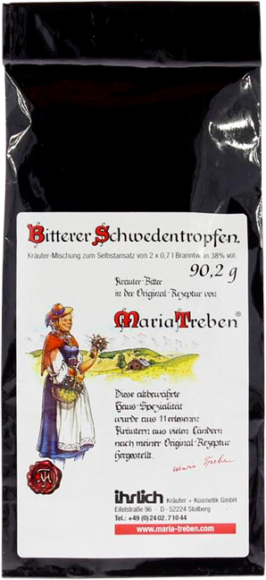

Доставка по всей России
8 800 000-00-00
Звонок бесплатный

Сбор трав
Шведская горечь
Не имеет аналогов в мире по оздоровительной силе и широте лечебных свойств
Узнайте подробнее о бальзаме
Узнать
1978
г.
Европейцы используют шведскую горечь еще с 1978 года
104
года
104 года прожил автор бальзама
40
показаний
Больше 40 показаний к применению
24
языка
8 млн книг на 24 языках продано о бальзаме
Что из этого списка вы находите у себя?
01.
Сниженный тонус, не хватает энергии
02.
Прыщи, бородавки и растяжки
03.
Слабая память и концентрация
04.
Болеете чаще раза в год?
05.
Головные боли
06.
Синяки, шишки, ожоги, порезы долго не проходят
08.
Проблемы с желудком
07.
Плохо засыпаете и часто просыпаетесь
09.
Стресс
01
02
03
04
05
06
07
08
09
Более 2 000 покупателей доказали эффективность «Шведской горечи» в каждом из этих случаев
Читать отзывы
Избавиться от проблем
Даже в странах с очень высоким уровнем медицины, таких как Германия и Австрия, бальзам Шведская Горечь продается в каждой аптеке!
Получить средство-панацею к себе в аптечку
Почему Шведская Горечь завоевала такую популярность?
Вот лишь несколько причин:
Эффективность как при наружном, так и внутреннем применении, более 40 показаний к применению
Случаи излечения с помощью сбора, когда традиционная медицина не смогла помочь
Постоянно выявляются новые целительные свойства бальзама
Эффект от применения можно увидеть сразу